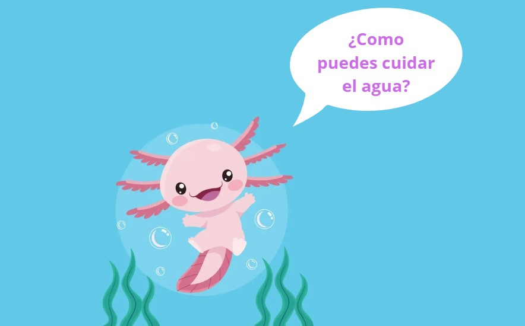
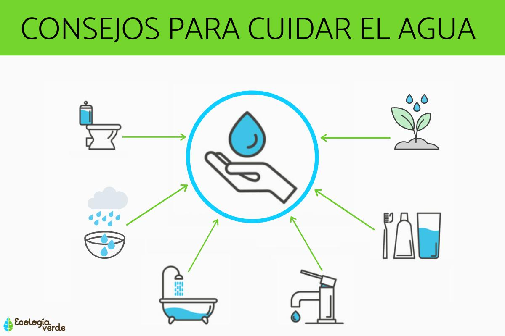
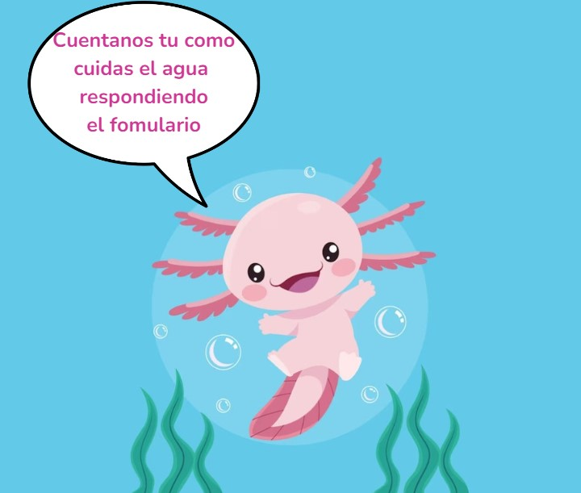

Cuidando el Agua: Nuestra Responsabilidad Compartida

1. Cierra bien los grifos: Asegúrate de cerrar completamente los grifos cuando no los estés utilizando. Un goteo constante puede desperdiciar grandes cantidades de agua a lo largo del tiempo.
2. Repara las fugas: Fíjate en posibles fugas en tuberías y grifos, y repáralas tan pronto como sea posible. Las pequeñas fugas pueden parecer insignificantes, pero suman grandes cantidades de agua desperdiciada con el tiempo.
3. Utiliza electrodomésticos eficientes: Cuando sea posible, elige electrodomésticos con certificación de eficiencia hídrica. Lavadoras, lavavajillas y otros aparatos modernos están diseñados para utilizar menos agua sin comprometer su rendimiento.
4. Recoge el agua de lluvia: Aprovecha la lluvia recolectando agua en barriles o cubos. Esta agua puede ser utilizada para regar plantas y jardines, reduciendo así la necesidad de agua potable para esos fines.
5. Riega con moderación: Cuando riegues plantas o jardines, hazlo temprano en la mañana o tarde en la tarde para evitar la evaporación rápida. Además, ajusta la cantidad de agua según las necesidades específicas de las plantas.
6. Conciencia en el baño: Reducir el tiempo en la ducha y evitar dejar correr el agua mientras te cepillas los dientes o afeitas puede marcar la diferencia. Además, considera instalar dispositivos de bajo flujo en grifos y duchas.
7. No uses el inodoro como basurero: Utilizar el inodoro solo para desechos humanos minimiza la cantidad innecesaria de agua utilizada en cada descarga.
8. Sé un consumidor consciente: Elige productos que requieran menos agua en su producción. La fabricación de ciertos bienes y alimentos implica un consumo significativo de agua, y optar por opciones más sostenibles contribuye a la conservación.
